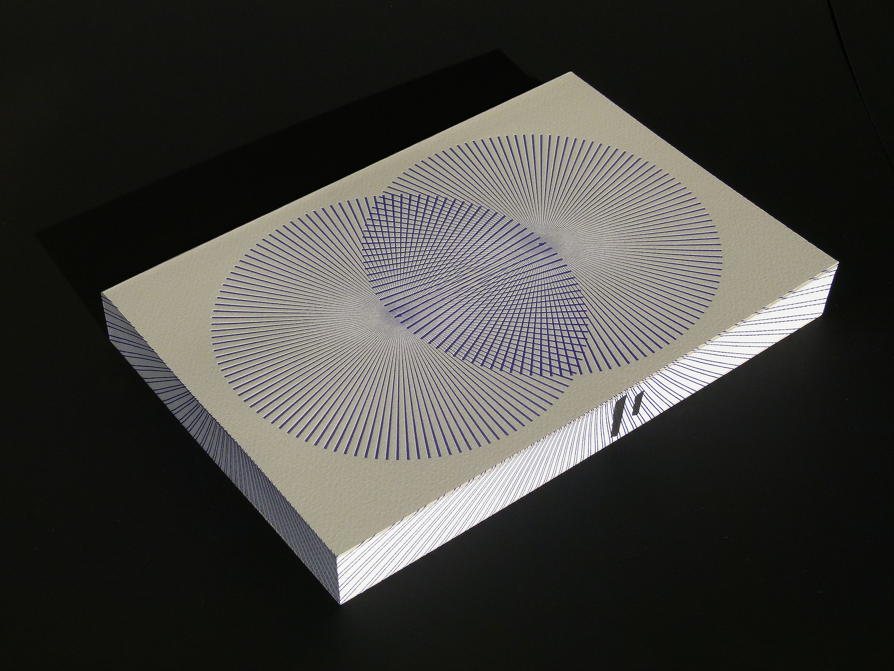

일본의 대표작가 무라카미 하루키의 3부작 소설. 2009년 5월 29일 일본에서 출판되자마자 100만부가 넘게 팔리며 2009년 베스트셀러 1위와 3위에 1Q84 각권이 랭크되는 등 공전의 히트를 기록했다. 한국에서도 유례없이 빠른 속도로 2009년 8월 25일과 9월 8일 각각 1권과 2권이 출시되었고, 곧 유명세를 타며 베스트셀러가 되었다.

이야기는 바흐의 평균율을 모티브로 하여 두 주인공인 덴고와 아오마메의 이야기를 3인칭 시점에서 각 장마다 번갈아가면서 서술한다. 3권에서는 여기에 우시카와의 이야기가 추가된다.
덴고는 수학과를 나와 소설가 지망생으로, 잡지 등에 글을 쓰면서 학원에서 학생을 가르치며 생활을 한다. 밥벌이나 성생활이나 여러가지를 스스로 충분히 자급자족하는 편이다.
아오마메의 경우 스포츠 트레이너로 일하면서 스트레칭을 가르치는 직업과 동시에 킬러라는 치명적인 부업을 가지고 있다. 무척이나 절도있고, 티끌하나 어슷함이 없다. 직업이나 면모나 모든 면에서 전혀 관계 없이 보이는 이 두사람이 서로 각자 하나의 존재와 관련되는 인물과 접하면서, 그 둘과 주변 인물의 관계와 과거, 그리고 현재와의 개연성이 씨실과 날실이 얽히듯 조금씩 얽혀가는 것이 이 소설의 백미이다.